zijn
to be
onregelmatigrang 1Abstract & generalgetekend
wasis geweest
- Scene
- one adult stands facing the viewer, feet apart and planted, and lays an open palm flat on their own chest; the other arm hangs relaxed at the side. The figure stands alone in the middle of the frame. This is the conventional "this is me" gesture for being; nothing else in the picture.
- Must read
- a standing person with an open palm on their own chest.
- Avoid
- a hand pointing away at someone else (wijzen); a hand pressed to the stomach (buikpijn); arms folded across the chest (boos); a name tag, badge or any lettering; both hands raised.
- Alt text
- Iemand staat recht voor de kijker met een open handpalm op de eigen borst.
- Example
- Wij zijn heel blij.
We are very happy.
zijn.png · rang 1 · A0 onregelmatig · lexicon woorden.tsv
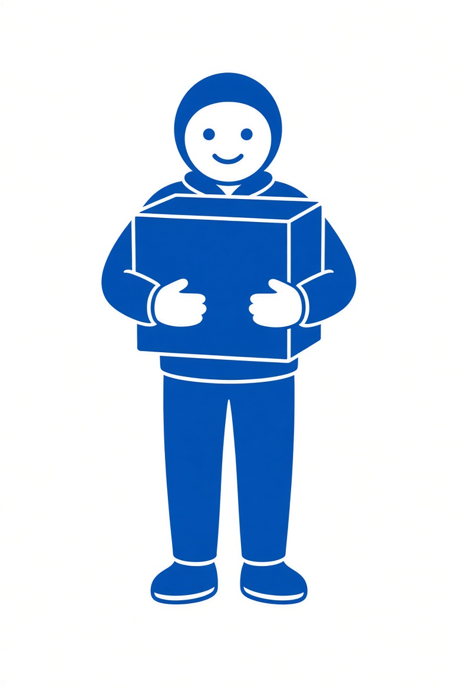
hebben
to have
onregelmatigrang 29Abstract & generalgetekendopnieuw tekenen
hadheeft gehad
- Scene
- one adult faces the viewer, hugging a closed cardboard box against the chest with both arms, chin on its top edge, the shoulders turned in a little to keep it close. Nothing else is in the picture: no symbol, no second person.
- Must read
- a box held tight to the chest with both arms.
- Avoid
- a box passing between two hands (geven); a shopping bag held by the handle at the side (kopen); a box carried while walking (dragen); a lid lifting off the box (openmaken); a padlock or a key (houden).
- Alt text
- Iemand drukt een dichte doos met beide armen tegen de borst.
- Example
- Ik heb een kleine hond.
I have a small dog.
hebben.png · rang 29 · A0 onregelmatig · lexicon woorden.tsv

kunnen
to be able to
onregelmatigrang 37Abstract & generalgetekend
konheeft gekund
- Scene
- one adult stands upright facing the viewer, right arm raised to the side with the elbow bent and the fist closed and flexed, chin lifted, eyes on the viewer and a slight smile. No object in the hand, no second figure, no furniture, no bubble. This is the conventional flexed-arm gesture for being able to.
- Must read
- a raised arm with a tight flexed fist and a confident face.
- Avoid
- the fist striking an object (slaan); a heavy weight pressing the arm down (moeten); both hands reaching behind glass (willen); a hand raised in a greeting wave (zwaaien); a fist with the thumb up.
- Alt text
- Iemand staat rechtop met een opgeheven arm en een gebalde vuist, en kijkt de kijker zelfverzekerd aan.
- Example
- Jij kunt hier wachten.
You can wait here.
kunnen.png · rang 37 · A0 onregelmatig · lexicon woorden.tsv
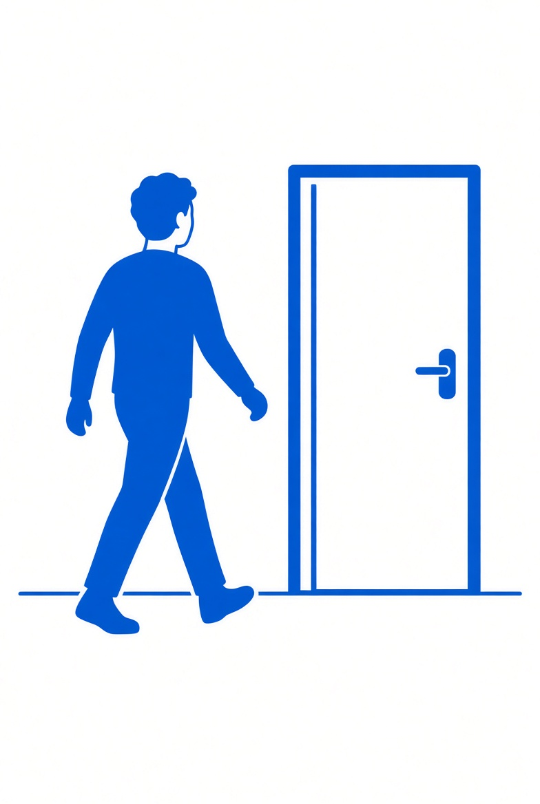
gaan
to go
onregelmatigrang 44Movement & positiongetekend
gingis gegaan
- Scene
- one adult is seen from behind at the left edge of the frame, mid-step towards a closed door in the right-hand wall: one foot flat, the other heel just lifted, arms swinging, head turned to the door. The floor between the person and the door is empty.
- Must read
- from behind, a walking person heading straight for a door.
- Avoid
- a person coming through the door towards the viewer (komen); both feet off the ground (rennen); a hand on the handle with the door half open (weggaan); a suitcase beside the door (vertrekken).
- Contrast
- Pair with komen. Same adult and the same doorway: the back is to the viewer and the door is ahead here, the face is towards the viewer as the person steps in there.
- Alt text
- Iemand met de rug naar de kijker loopt met een opgeheven voet recht op een gesloten deur af.
- Example
- Wij gaan naar school.
We go to school.
gaan.png · rang 44 · A0 onregelmatig · lexicon woorden.tsv

zien
to see
onregelmatigrang 57Abstract & generalgetekendopnieuw tekenen
zagheeft gezien
- Scene
- one adult stands in a bare room and has just noticed a ball lying on the floor a few steps away: the head is turned to it, the eyes wide and the eyebrows up, and two short straight lines run from the eyes to the ball. The hands hang at the sides.
- Must read
- wide eyes with short sight lines running to a ball on the floor.
- Avoid
- a hand shading the eyes and a long look at the horizon (kijken); both hands held up in front of the face (verstoppen); a hand reaching under a cushion (zoeken); eyes on a phone screen (lezen); a hand closing round the ball (pakken).
- Contrast
- Pair with kijken. One adult looking: the eyes go wide with short sight lines to what lies close here, a hand shades the eyes and the gaze runs far into the distance there.
- Alt text
- Iemand staat in een lege kamer en merkt met grote ogen een bal op de vloer op.
- Example
- Ik zie een grote boom.
I see a big tree.
zien.png · rang 57 · A0 onregelmatig · lexicon woorden.tsv
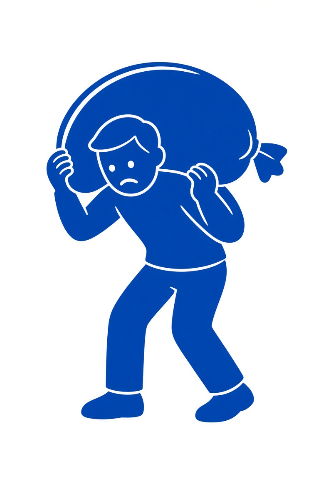
moeten
to have to
onregelmatigrang 58Abstract & generalgetekend
moestheeft gemoeten
- Scene
- one adult stands bowed forward under a large plain sack lying across the shoulders, both hands holding its edges, knees slightly bent, face pushed forward. No second person, no trolley, no ground pattern. This is the conventional metaphor for having to, the heavy weight on the back; draw it plainly.
- Must read
- a person bent under a heavy sack lying across the shoulders.
- Avoid
- a raised arm with a flexed fist (kunnen); both hands reaching behind glass (willen); a bag carried by one handle at the side (dragen); a pointed finger of command (bevelen); a clock on the wall.
- Alt text
- Iemand staat voorovergebogen onder een zware zak op de schouders en houdt de randen met beide handen vast.
- Example
- Ik moet nu naar huis.
I have to go home now.
moeten.png · rang 58 · A0 onregelmatig · lexicon woorden.tsv

komen
to come
onregelmatigrang 73Movement & positiongetekend
kwamis gekomen
- Scene
- one adult steps through an open doorway towards the viewer, front foot on the ground and back foot still on the threshold, arms swinging, head up and eyes on the viewer. The wall runs left and right of the doorway, and the floor in front of the person is empty.
- Must read
- through a doorway, walking towards the viewer with the back foot on the threshold.
- Avoid
- a person seen from behind heading for a closed door (gaan); both feet off the ground (rennen); a hand pushing the door shut (sluiten); someone waving both arms (groeten).
- Contrast
- Pair with gaan. Same adult and the same doorway: the person steps in towards the viewer here, the back is turned and the door is ahead there.
- Alt text
- Iemand stapt door een open deur naar de kijker toe; de achterste voet staat nog op de drempel.
- Example
- Hij komt morgen bij ons.
He is coming to our place tomorrow.
komen.png · rang 73 · A0 onregelmatig · lexicon woorden.tsv
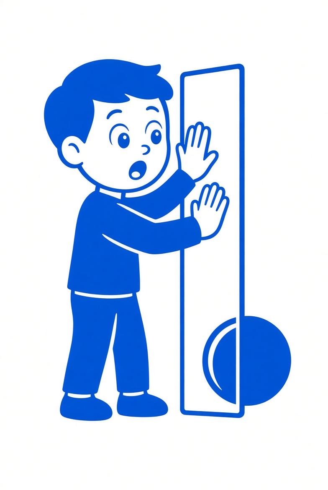
willen
to want
onregelmatigrang 100Abstract & generalgetekend
wilde / wouheeft gewild
- Scene
- one adult stands with both hands pressed flat against a tall glass sheet that reaches the floor, nose close to the glass, eyes wide and mouth open. One plain ball lies behind the glass. This is the conventional metaphor for wanting, both hands reaching for something behind glass; draw it plainly.
- Must read
- two hands flat on the glass, looking in at a ball behind it.
- Avoid
- a heavy sack on the back (moeten); a raised flexed fist (kunnen); coins and notes on a counter (betalen); a hand wiping the glass clean (poetsen).
- Alt text
- Iemand drukt beide handen plat tegen een glasplaat en kijkt met grote ogen naar een bal erachter.
- Example
- Ik wil graag water.
I would like some water.
willen.png · rang 100 · A0 onregelmatig · lexicon woorden.tsv
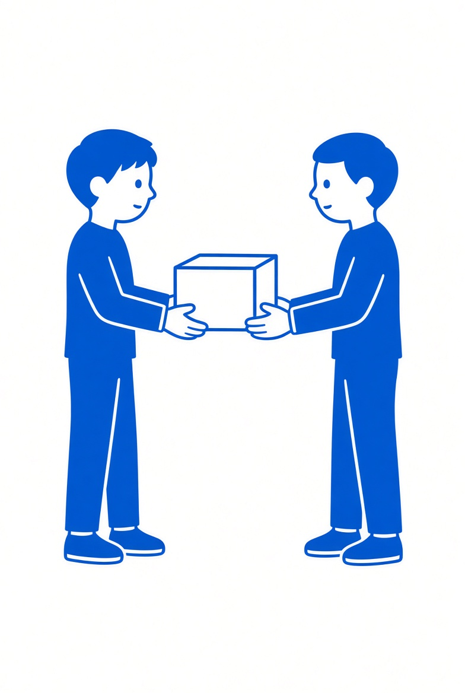
geven
to give
onregelmatigrang 112Abstract & generalgetekend
gafheeft gegeven
- Scene
- two adults stand facing each other an arm's length apart. The person on the left holds out a closed cardboard box with both hands; the person on the right has both hands already closed around the far side of the box, so only hands and box touch. Both look at the box. Above the head of the GIVER (the left person) floats one bold solid cobalt arrow pointing straight down at the head, with a clear white gap between arrow tip and hair; it marks who performs the verb. The other person has no arrow. No text.
- Must read
- a box passing from hand to hand between two people who face each other.
- Avoid
- one person alone pressing a box to the chest (hebben); an open empty palm held out (vragen); coins and notes on a counter (betalen); a box with a ribbon and bow (cadeau); one hand lifted in a wave (zwaaien).
- Alt text
- Twee mensen staan tegenover elkaar met een doos tussen hun handen.
- Example
- Ik geef je een appel.
I give you an apple.
geven.png · rang 112 · A0 onregelmatig · lexicon woorden.tsv

vinden
to find
onregelmatigrang 114Abstract & generalgetekend
vondheeft gevonden
- Scene
- one adult kneels on the floor beside a low plain shelf, both hands lifting a key on a ring out of a glass jar that stood behind the front row of jars; the eyes are on the key and the mouth is open in surprise. A second key is already in the other fist.
- Must read
- a key lifted out of a jar by a person who has just spotted it.
- Avoid
- a hand reaching deep into a bag (zoeken); a person with a phone lying on the floor (verliezen); coins counted on a counter (betalen); a hand shading the eyes on a hill (zoeken).
- Alt text
- Iemand knielt bij een lage plank en tilt een sleutel aan een ring uit een potje.
- Example
- Kun je mijn sleutels vinden?
Can you find my keys?
vinden.png · rang 114 · A0 onregelmatig · lexicon woorden.tsv

weten
to know (a fact)
onregelmatigrang 126Thought & knowledgegetekend
wistheeft geweten
- Scene
- one adult stands facing the viewer, chin up, one finger raised, mouth slightly open. Above the head floats a conventional thought bubble of three small circles rising to one cloud, and inside it a single bold bright light bulb. This is the conventional metaphor for knowing, the light going on; use no question mark.
- Must read
- a thought bubble with a bright light bulb above the head.
- Avoid
- a cloud bubble with a question mark inside (denken); a bare question mark over the head (twijfelen); a book and a finger on the page (studeren); letters or numbers of any kind (rekenen); two speech bubbles (praten).
- Alt text
- Iemand staat met een opgeheven vinger; boven het hoofd hangt een wolk met een brandende gloeilamp.
- Example
- Ik weet het antwoord niet.
I do not know the answer.
weten.png · rang 126 · A0 onregelmatig · lexicon woorden.tsv

krijgen
to get
onregelmatigrang 127Abstract & generalgetekend
kreegheeft gekregen
- Scene
- two adults face each other an arm's length apart; the one on the right holds a cardboard box that has just settled on both open palms, and the one on the left still touches its near corner with two fingers. Both look at the box. Above the head of the RECEIVER (the person whose hands are under the box) floats one bold solid cobalt arrow pointing straight down at the head, with a clear white gap between arrow tip and hair; it marks who performs the verb. The other person has no arrow. No text.
- Must read
- a box already settled in two open hands held out towards the chest.
- Avoid
- a box pushed away by two hands flat on its side (geven); coins and notes on a counter with a bag (betalen); two hands reaching behind glass (willen); a box grabbed away with a turn of the body (nemen).
- Alt text
- De doos rust al in twee open handen; de ander houdt nog twee vingers aan de hoek.
- Example
- Ik krijg een brief van school.
I get a letter from school.
krijgen.png · rang 127 · A0 onregelmatig · lexicon woorden.tsv

staan
to stand
onregelmatigrang 132Movement & positiongetekend
stondheeft gestaan
- Scene
- one adult stands upright, seen from the side, both feet flat on the ground and close together, arms hanging straight down along the body, eyes ahead. The ground is a single clean line and nothing is beside the feet: no chair and no bicycle.
- Must read
- both feet flat on the ground and the whole body upright and still.
- Avoid
- one foot lifted off the ground in a stride (lopen); knees bent with the seat just above a chair (zitten); both knees on the floor (knielen); a hand on a table edge to push up (opstaan).
- Contrast
- Pair with zitten. Same adult and the same room: the body rests on both feet with no chair here, a chair takes the seat's weight there.
- Alt text
- Iemand blijft rechtop overeind met beide voeten plat naast elkaar en de armen langs het lichaam.
- Example
- De fles staat op tafel.
The bottle is standing on the table.
staan.png · rang 132 · A0 onregelmatig · lexicon woorden.tsv

zeggen
to say
onregelmatigrang 133Communication & languagegetekend
zeiheeft gezegd
- Scene
- one adult stands facing a second adult a metre away, head turned to them, mouth open mid-word and one hand raised at chest height with the palm up. The second faces the speaker and nods slightly. One soft curved line of sound marks leaves the speaker's mouth; nobody else is in the frame.
- Must read
- one person mid-word with a raised open hand, the other listening.
- Avoid
- a hand cupped at the ear (luisteren); speech bubbles over both heads (praten); a finger raised high with a bright thought bubble (weten); a hand held flat over the mouth (zwijgen); a raised open palm with nothing said (vragen).
- Alt text
- Iemand staat tegenover een ander en spreekt met een open mond en een opgeheven hand.
- Example
- Wat wil je zeggen?
What do you want to say?
zeggen.png · rang 133 · A0 onregelmatig · lexicon woorden.tsv
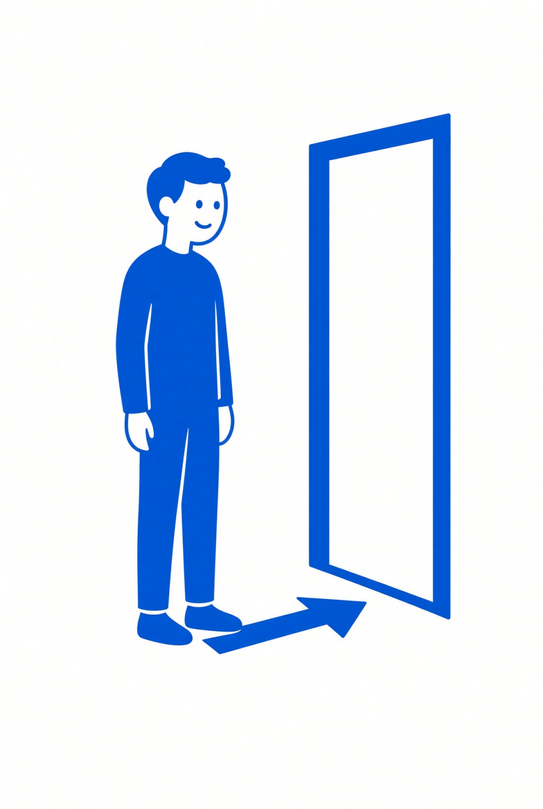
zullen
will
onregelmatigrang 137Abstract & generalgetekend
zougeen voltooid deelwoord
- Scene
- one adult stands beside a large, bold open doorway, seen from the front, full figure head to feet, the doorway about as tall as the adult and drawn with thick outlines. A single bold arrow lies flat on the floor: its tail starts at the adult's feet, its shaft runs straight across the open threshold, and its arrowhead is clearly on the far side of the doorway, past the door frame. The arrow must visibly pass through the opening. This is the conventional metaphor for the future, will; draw only that one arrow, no clock and no calendar.
- Must read
- a standing person beside a doorway with one bold floor arrow running from the feet through the opening, the arrowhead beyond the door frame.
- Avoid
- a person walking with one foot lifted towards a closed door (gaan); an arrow on a road sign (leiden); a clock or a calendar; a person stepping out with a suitcase (vertrekken).
- Alt text
- Iemand staat naast een grote open deuropening; een dikke pijl op de grond loopt vanaf de voeten dwars door de opening, met de punt voorbij het kozijn.
- Example
- Het zal morgen mooi weer zijn.
The weather will be nice tomorrow.
zullen.png · rang 137 · A0 onregelmatig · lexicon woorden.tsv

houden
to hold / to keep
onregelmatigrang 142Movement & positiongetekend
hieldheeft gehouden
- Scene
- one adult stands facing the viewer holding a closed wooden box against the chest with both hands flat on its front, elbows in, feet together; the box does not hang and is not wrapped. Nothing else is in the picture and the person's eyes rest on the box.
- Must read
- a closed box held flat and square against the chest.
- Avoid
- a box passing between two hands (geven); a box on one flat palm offered out (laten); a box with a ribbon and bow (cadeau); a hand lifting a lid off the box (openmaken).
- Alt text
- Iemand heeft een dichte houten doos met beide handen vlak tegen de borst.
- Example
- Ik houd mijn tas in mijn hand.
I hold my bag in my hand.
houden.png · rang 142 · A0 onregelmatig · lexicon woorden.tsv
geen beeld
houden (van)
to love
onregelmatigrang 142Movement & position
hieldheeft gehouden
- Scene
- One adult kneels and hugs a small child tightly, both with eyes closed and smiling, cheeks together. A single small heart floats above their heads. They stand alone on a plain floor, with no gift, no box and nothing else in the picture.
- Must read
- two people hugging with a small heart above them.
- Avoid
- one person holding a box against the chest (houden); a child handing a toy to an adult (geven); two people shaking hands (schudden); a kiss on the lips between a couple (zoenen); a crowd of hearts.
- Alt text
- Een volwassene en een kind omarmen elkaar stevig met gesloten ogen; boven hen zweeft een klein hartje.
- Example
- Ik hou van mijn kleine zusje.
I love my little sister.
houden-van.png · rang 142 · A0 onregelmatig · lexicon woorden.tsv

blijven
to remain
onregelmatigrang 143Abstract & generalgetekend
bleefis gebleven
- Scene
- one adult stands still at the left of the frame while a second adult walks away to the right, already small and turned from the viewer; the first keeps both feet planted and both arms at the sides, watching the other go. Only a thin empty strip of ground lies between them.
- Must read
- one person standing still while the other walks off.
- Avoid
- both people walking together (lopen); a person with a phone ringing at the ear (bellen); a person sitting on a bench (zitten); the standing person stepping after the other (volgen).
- Alt text
- Iemand staat stil met beide voeten op de grond en kijkt een ander na die wegloopt.
- Example
- Wij blijven vandaag thuis.
We are staying at home today.
blijven.png · rang 143 · A0 onregelmatig · lexicon woorden.tsv
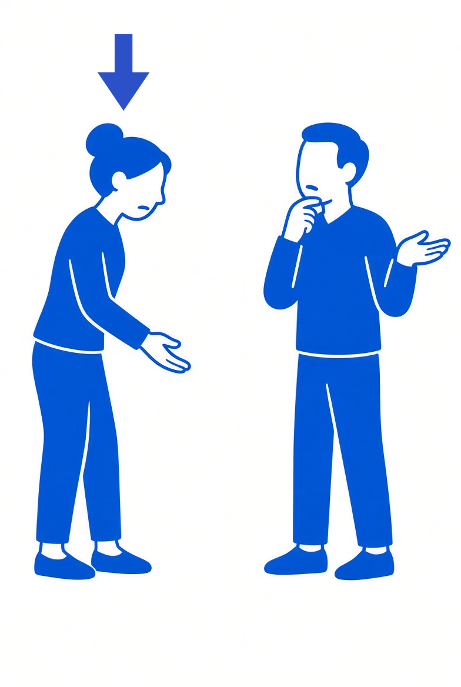
vragen
to ask
onregelmatigrang 151Communication & languagegetekend
vroegheeft gevraagd
- Scene
- two adults face each other; the one on the left leans forward with an open empty palm held out low, head tilted; the one on the right has a finger at the chin and a slight shrug. The palm opens to the sky, holds nothing, and no sound leaves either mouth. Above the head of the ASKER (the person with the empty open palm) floats one bold solid cobalt arrow pointing straight down at the head, with a clear white gap between arrow tip and hair; it marks who performs the verb. The other person has no arrow. No text.
- Must read
- an open empty palm held out low to another person.
- Avoid
- a speech line leaving the open mouth (zeggen); speech bubbles over both heads (praten); a closed box on that palm (geven); a hand cupped at the ear (luisteren); two people with crossed arms in a quarrel (ruzie maken).
- Contrast
- Pair with antwoorden. Same two adults: the empty palm is held out low here, the raised finger answers there.
- Alt text
- Twee mensen staan tegenover elkaar; de één houdt een lege handpalm op en de ander haalt de schouders op.
- Example
- Ik vraag de weg aan een man.
I ask a man for directions.
vragen.png · rang 151 · A0 onregelmatig · lexicon woorden.tsv

nemen
to take
onregelmatigrang 166Abstract & generalgetekend
namheeft genomen
- Scene
- one adult sits behind a plain table and closes one hand round a piece of fruit, lifting it clear of the table, the elbow raised slightly and the eyes on the fruit. The table otherwise holds one small empty plate, and no second person is there.
- Must read
- one hand closing on a piece of fruit and lifting it off the table.
- Avoid
- a hand reaching out with fingers still open (pakken); a hand with the fruit pressed to the lips (eten); two hands with a fruit passing between them (geven); a hand putting a fruit down on the plate (leggen).
- Alt text
- Iemand zit aan een tafel en tilt met duim en vingers een stuk fruit van het tafelblad.
- Example
- Ik neem de bus naar mijn werk.
I take the bus to my work.
nemen.png · rang 166 · A0 onregelmatig · lexicon woorden.tsv
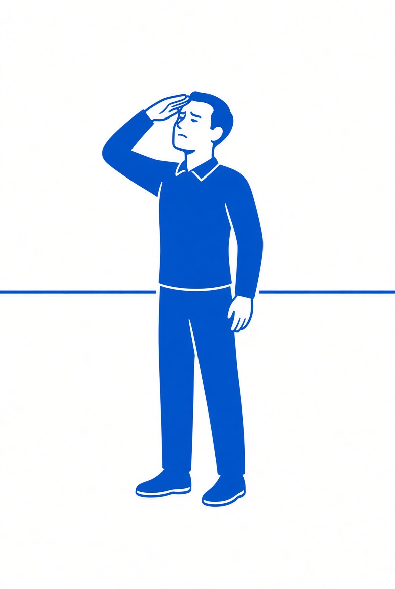
kijken
to look
onregelmatigrang 175Abstract & generalgetekend
keekheeft gekeken
- Scene
- one adult stands turned half towards the viewer looking far to the left, one hand raised flat beside the temple to shade the eyes, chin up, eyebrows slightly drawn. Only a plain horizon line shows behind the person, and there is no object in the picture to rest the eye on.
- Must read
- a hand shading the eyes and a long look into the distance.
- Avoid
- wide eyes with short lines running to a ball on the floor (zien); a telescope held to one eye (turen); a hand pressed to the mouth (denken); both hands reaching behind glass (willen); a chair and a book (lezen).
- Contrast
- Pair with zien. One adult looking: a hand shades the eyes and the gaze runs far into the distance here, the eyes go wide with short sight lines to what lies close there.
- Alt text
- Iemand tuurt met een vlakke hand boven de ogen in de verte, met de kin omhoog.
- Example
- Wij kijken naar een film.
We are watching a film.
kijken.png · rang 175 · A0 onregelmatig · lexicon woorden.tsv
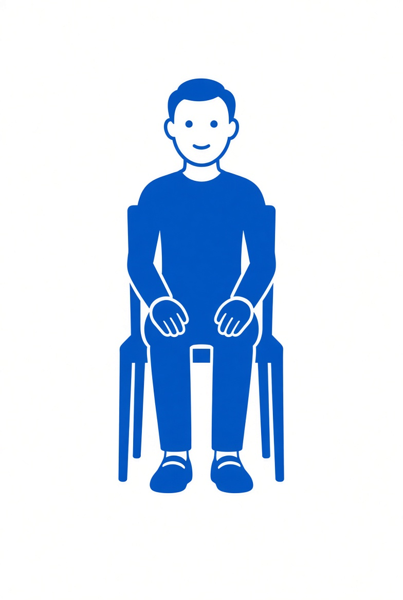
zitten
to sit
onregelmatigrang 181Movement & positiongetekend
zatheeft gezeten
- Scene
- one adult sits on the front edge of a plain chair, both feet flat on the floor, thighs level and back upright, hands resting on the knees, eyes ahead. The chair is the only furniture and no table stands in front of it.
- Must read
- the seat on a chair with both feet flat on the floor.
- Avoid
- both legs folded on the floor with the body upright (zitten op de grond); both knees on the floor (knielen); the body upright on two flat feet (staan); one foot lifted in a step away from the chair (opstaan).
- Contrast
- Pair with staan. Same adult and the same room: a chair takes the seat's weight here, the body rests on both feet with no chair there.
- Alt text
- Iemand rust rechtop op de rand van een stoel met beide voeten plat op de vloer.
- Example
- De kat zit op de stoel.
The cat is sitting on the chair.
zitten.png · rang 181 · A0 onregelmatig · lexicon woorden.tsv

denken
to think
onregelmatigrang 194Thought & knowledgegetekend
dachtheeft gedacht
- Scene
- one adult sits on a plain chair, chin on one fist, elbow on the knee, eyes up and away. Above the head floats a conventional thought bubble: three small circles rising to one large cloud with one bold question mark inside. This is the conventional metaphor for thinking; add no light bulb.
- Must read
- a seated person with a thought bubble and a question mark above the head.
- Avoid
- a light bulb inside the bubble (weten); a bare question mark over the head with no bubble (twijfelen); a book and a pen (studeren); two people with speech bubbles (praten); a hand pressed to the mouth (twijfelen).
- Alt text
- Iemand zit met de kin op de vuist; boven het hoofd hangt een gedachtewolk met een vraagteken.
- Example
- Ik denk aan mijn moeder.
I am thinking of my mother.
denken.png · rang 194 · A0 onregelmatig · lexicon woorden.tsv
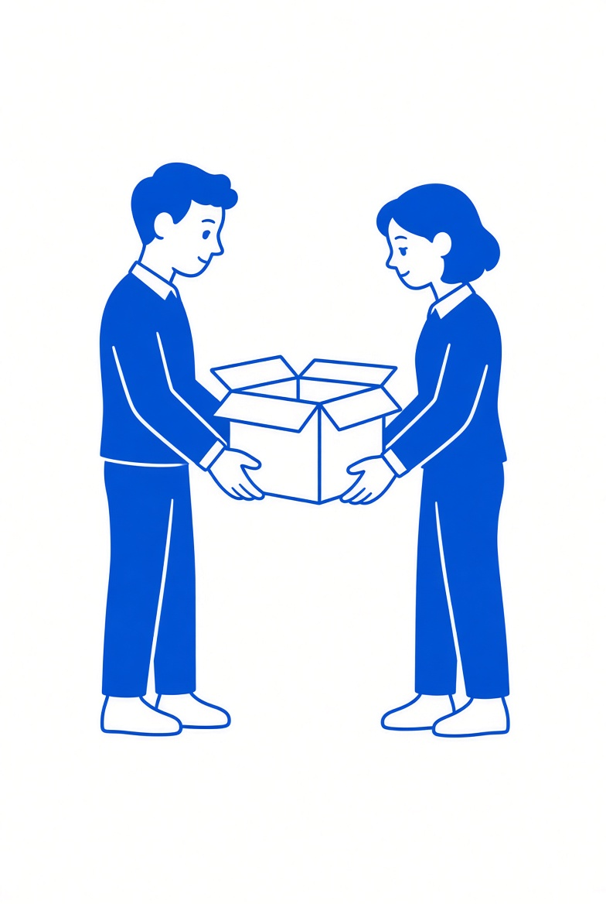
helpen
to help
onregelmatigrang 197Character & behaviourgetekend
hielpheeft geholpen
- Scene
- two adults stand side by side, both hands on the same open cardboard box: the left person's hands under the far side, the right person's hands under the near side, and together they lift the box level off the floor. Both look at the box, not at each other.
- Must read
- one box lifted by four hands of two people.
- Avoid
- a box passing from one hand to another (geven); one person alone carrying the box (dragen); a hand holding out an empty palm (vragen); a hand laid on a shoulder (troosten).
- Alt text
- Twee mensen tillen samen één doos op: vier handen aan dezelfde doos.
- Example
- Kun je mij helpen?
Can you help me?
helpen.png · rang 197 · A0 onregelmatig · lexicon woorden.tsv

eten
to eat
onregelmatigrang 250Food & drinkgetekend
atheeft gegeten
- Scene
- one adult sits facing the viewer at a plate on a plain table, biting into a piece of bread held in both hands; bread, a knife and an empty plate lie on the table, and the cheeks are slightly full. No stove, pan or spoon in the picture.
- Must read
- an adult with a bite of bread in the mouth, sitting at a plate.
- Avoid
- a hand lifting a piece of fruit off the table (nemen); a pan on a stove and a wooden spoon (koken); a cup lifted to the open mouth (drinken); a knife cutting the bread on a board (snijden); a hand on a laptop (werken).
- Contrast
- Pair with drinken. Same adult at the same table: a bite of bread is in the mouth here, a tilted glass is at the lips there.
- Alt text
- Iemand zit aan tafel en bijt in een stuk brood, met een bord en een mes voor zich.
- Example
- Wij eten samen soep.
We eat soup together.
eten.png · rang 250 · A0 onregelmatig · lexicon woorden.tsv
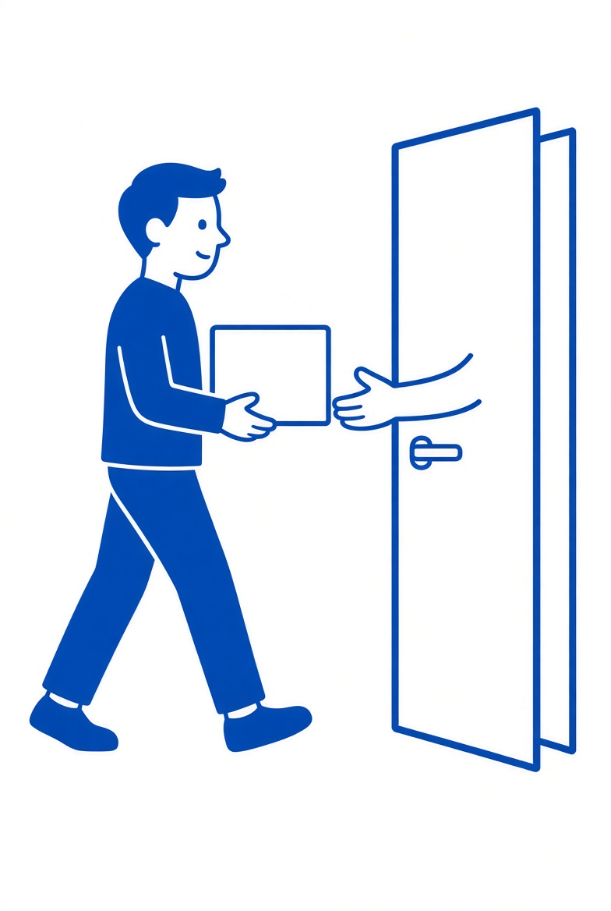
brengen
to bring
onregelmatigrang 256Movement & positiongetekend
brachtheeft gebracht
- Scene
- two full adults, both drawn head to feet. On the left a man in a cap walks to the right carrying a closed cardboard box level in both hands. On the right a woman stands in an open doorway of her own plain house, the open door swung back beside her, both hands held out open at waist height to receive the box, smiling and looking at the box. A clear gap of floor lies between the box and her hands: the box is still in the carrier's hands and has not been handed over yet. Above the head of the CARRIER (the man in the cap) floats one bold solid cobalt arrow pointing straight down at the head, with a clear white gap between arrow tip and hair; it marks who performs the verb. The other person has no arrow. No text.
- Must read
- a person carrying a box towards a second person who waits at an open door with open hands.
- Avoid
- a hand or arm coming out of a door with no person attached (nobody may be cut off by the door frame); the box already in the second person's hands (geven); a box put down on a doorstep with nobody there (zetten); a crate on the head (dragen); a van at the kerb (rijden).
- Alt text
- Een man loopt met een doos naar een vrouw die met open handen in een open deur staat te wachten.
- Example
- Ik breng de kinderen naar school.
I take the children to school.
brengen.png · rang 256 · A0 onregelmatig · lexicon woorden.tsv
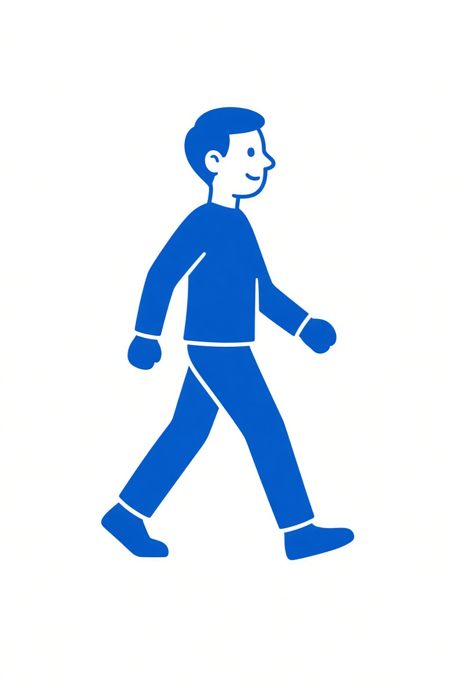
lopen
to walk
onregelmatigrang 292Movement & positiongetekend
liepheeft/is gelopen
- Scene
- one adult walks from left to right over empty ground, caught mid-stride: the front foot flat on the ground, the back foot just lifted on its toes, the arms swinging in opposition, back straight, eyes ahead. Nothing else in the picture.
- Must read
- an ordinary unhurried walk, one foot down and one just leaving the ground.
- Avoid
- both feet off the ground and the body leaning forward (rennen); a raised knee and a straight swinging arm (marcheren); a person standing still beside a bicycle (fietsen); a walking stick; speed lines or dust puffs.
- Contrast
- Pair with rennen. Same adult on the same path: one foot stays down here, both feet leave the ground with a forward lean there.
- Alt text
- Een volwassene is midden in een stap: de voorste voet staat plat op de grond, de achterste voet is net van de vloer.
- Example
- Ik loop naar de supermarkt.
I walk to the supermarket.
lopen.png · rang 292 · A0 onregelmatig · lexicon woorden.tsv
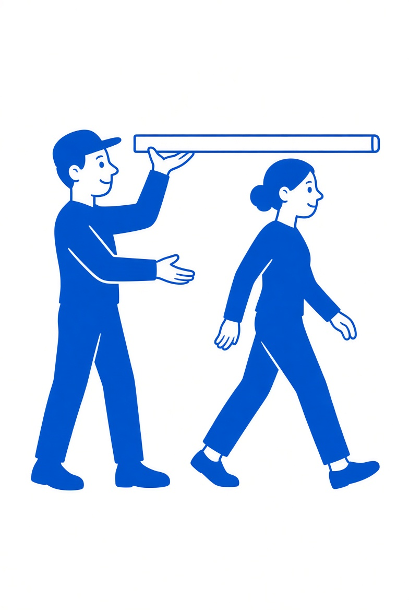
mogen
to be allowed
onregelmatigrang 293Abstract & generalgetekendopnieuw tekenen
mochtheeft gemogen
- Scene
- two full adults, both drawn head to feet, at a garden gate. A plain fence of three bold rails runs across the picture with a fixed post at each side; the gate leaf is swung wide open on its hinges and the gap is clearly empty. On the left the host stands beside the open gate, smiling, one arm stretched out with an open palm sweeping towards the gap in a clear 'go ahead' gesture, the other thumb raised. On the right the visitor is mid-step walking through the gap, looking at the host and smiling. No barrier arm, no pole, no sign. Above the head of the HOST (the person giving permission) floats one bold solid cobalt arrow pointing straight down at the head, with a clear white gap between arrow tip and hair; it marks who performs the verb. The other person has no arrow. No text.
- Must read
- one person with an open welcoming hand and a thumb up, letting a second person walk through an open gate.
- Avoid
- any long pole or barrier arm above a head (it reads as a floating plank); a flat palm held up to stop someone (stoppen); a heavy sack (moeten); a flexed fist (kunnen); coins or a ticket (betalen); a sign or arrow.
- Alt text
- Een man staat naast een open hek en wuift een vrouw die erdoor loopt met open hand en duim omhoog welkom.
- Example
- Je mag hier niet parkeren.
You are not allowed to park here.
mogen.png · rang 293 · A0 onregelmatig · lexicon woorden.tsv

beginnen
to begin
onregelmatigrang 298Timegetekend
begonis begonnen
- Scene
- one adult sits at a plain table with a closed notebook and a closed pen case in front of them; the hands lift the front cover, raised a hand width off the table, the first blank page showing. The moment is the cover coming up, not later.
- Must read
- the cover of a closed notebook being lifted for the first time.
- Avoid
- an open notebook already half full on the table (schrijven); a hand placed flat on a shut book with the pen lid on (wachten); a person walking through an open door into a room (verlaten); a bell or a whistle; a stopwatch.
- Alt text
- Een volwassene zit aan een tafel en tilt net het voorplat van een gesloten schrift op, met een dichte pennenbak ernaast.
- Example
- De les begint om negen uur.
The lesson begins at nine o'clock.
beginnen.png · rang 298 · A0 onregelmatig · lexicon woorden.tsv

zoeken
to search
onregelmatigrang 304Abstract & generalgetekend
zochtheeft gezocht
- Scene
- one adult kneels on one knee on the floor in the middle of a plain room, bent forward and looking hard at the floor, holding a large round magnifying glass in one hand out in front of them and close to the ground, with the other hand pressed on the floor for balance. A low sofa stands behind them. Nothing of the lost object is visible and nothing is being opened or lifted.
- Must read
- a person on one knee peering through a magnifying glass held low over the floor, hunting for something.
- Avoid
- a cushion lifted on the knee or a box being opened (it reads as unwrapping); an object held up in a raised hand (vinden); keys left on a table (vergeten); an eye to a microscope on a table (onderzoeken); a hand shielding the eyes looking into the distance (kijken).
- Alt text
- Een volwassene knielt in een kamer en speurt met een vergrootglas vlak boven de vloer.
- Example
- Ik zoek mijn telefoon.
I am looking for my phone.
zoeken.png · rang 304 · A0 onregelmatig · lexicon woorden.tsv
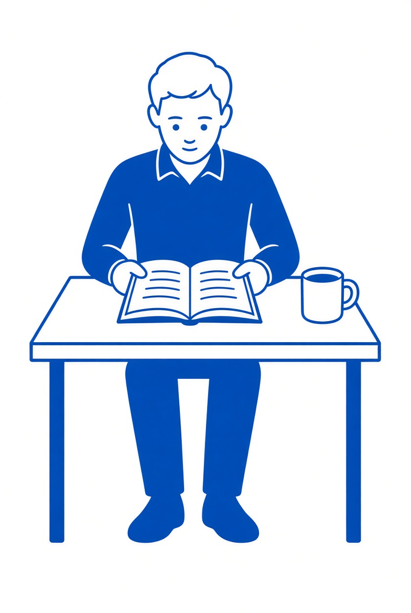
lezen
to read
onregelmatigrang 307Communication & languagegetekend
lasheeft gelezen
- Scene
- one adult sits at a plain table with an open book lying flat in front of them, both hands resting at its edges, the head bowed and the eyes on the pages; the pages show short plain lines of print and no letters. A mug stands off to the side, untouched.
- Must read
- eyes turned down on an open book held flat on the table.
- Avoid
- a pen touching the paper (schrijven); a laptop screen with both hands on the keys (werken); a person holding a book up with one finger marking the place (leren); a closed book.
- Contrast
- Pair with schrijven. Same adult at the same table: the eyes are down on an open book here, the pen presses marks onto paper there.
- Alt text
- Een volwassene zit aan een tafel met een open boek, beide handen aan de rand en de ogen op de bladzijden.
- Example
- Hij leest een boek in bed.
He reads a book in bed.
lezen.png · rang 307 · A0 onregelmatig · lexicon woorden.tsv
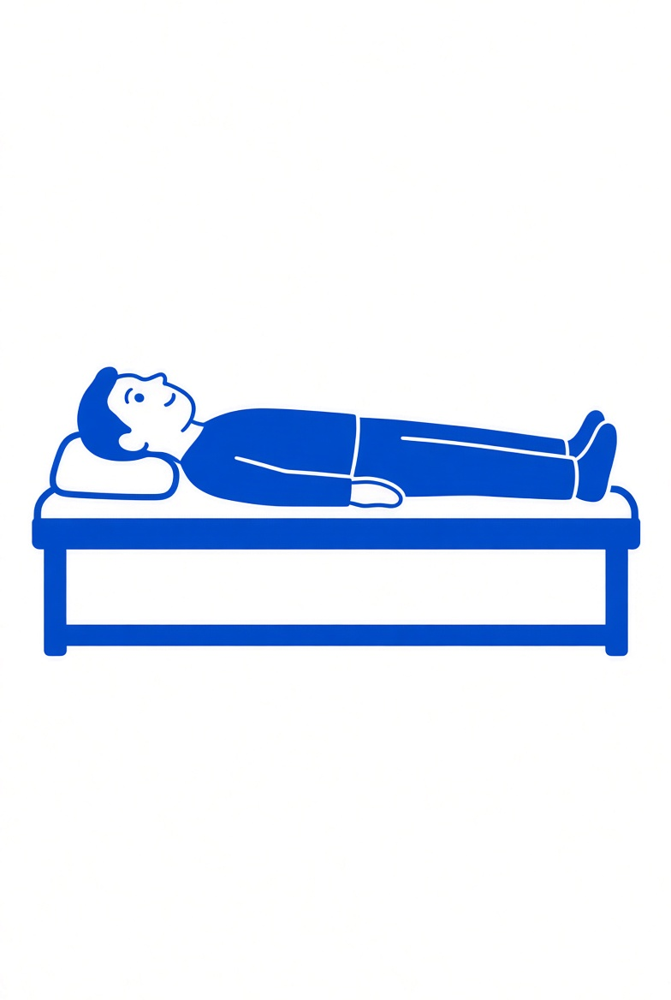
liggen
to lie
onregelmatigrang 332Movement & positiongetekend
lagheeft gelegen
- Scene
- one adult lies flat on their back on a made bed on top of the covers, both arms at their sides, the head on a pillow, eyes wide open and looking up at the ceiling. The blanket is not pulled up and the knees are straight. Nothing else in the room.
- Must read
- a person flat on their back on the bed with both eyes open.
- Avoid
- closed eyes and a blanket pulled up to the chin (slapen); the body bent up at the waist with the feet on the floor (zitten); the body curled on one side with both knees drawn up (slapen); a book or a phone in the hands.
- Alt text
- Een volwassene rust met gestrekte benen op de rug op een opgemaakt bed, de ogen open en naar boven gericht.
- Example
- Het boek ligt op de grond.
The book is lying on the floor.
liggen.png · rang 332 · A0 onregelmatig · lexicon woorden.tsv

kopen
to buy
onregelmatigrang 381Money & tradegetekend
kochtheeft gekocht
- Scene
- two full adults facing each other across a plain shop counter, both drawn head to feet. On the left the BUYER stands in front of the counter with a small shopping basket on one arm and holds a folded banknote out towards the seller. On the right the SELLER stands behind the counter in a plain apron with a large chunky cash register on the counter at the seller's side and a paper bag of apples on the counter, not yet picked up. The note is still in the buyer's hand. Above the head of the BUYER (the left person) floats one bold solid cobalt arrow pointing straight down at the head, with a clear white gap between arrow tip and hair; it marks who is performing the verb. The other person has no arrow. No text.
- Must read
- the buyer, marked by the arrow, holding out money to a seller who has a cash register.
- Avoid
- an arrow over the seller; the bag already in the buyer's hand (finished sale); a close-up price tag or till display (betalen); a bag carried away with a coin still in the hand (halen); the seller holding out the bag with the customer's hands empty (verkopen); a credit card; any text or numbers on the register.
- Contrast
- Pair with verkopen. Same two people at the same counter with the same cash register: the arrow marks the buyer here, who holds out the note; it marks the seller there, who holds out the bag.
- Alt text
- Een klant, aangewezen met een pijl, houdt een briefje geld naar een verkoper achter een toonbank met een kassa.
- Example
- Ik wil een nieuwe fiets kopen.
I want to buy a new bike.
kopen.png · rang 381 · A0 onregelmatig · lexicon woorden.tsv
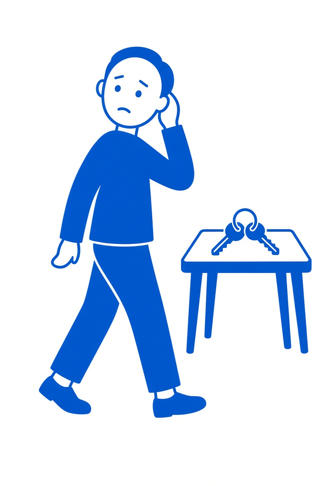
vergeten
to forget
onregelmatigrang 396Thought & knowledgegetekend
vergatheeft/is vergeten
- Scene
- one adult walks away from a small table, looking back over one shoulder with a slight frown; a bunch of keys on a round ring lies alone on the table behind them, and one hand is raised to the side of the head.
- Must read
- keys left behind on the table while the person walks off.
- Avoid
- a person kneeling to look under a sofa (zoeken); the keys held up in triumph (vinden); a crossed-out calendar; a hand over the mouth.
- Alt text
- Iemand loopt bij een tafel vandaan en kijkt om; op de tafel blijft een bos sleutels liggen.
- Example
- Ik ben mijn paraplu vergeten.
I have forgotten my umbrella.
vergeten.png · rang 396 · A0 onregelmatig · lexicon woorden.tsv

vallen
to fall
onregelmatigrang 425Movement & positiongetekend
vielis gevallen
- Scene
- one adult is caught off balance on empty ground: the body tilted sharply forward with both arms flung out, the back foot off the ground, the front heel just lifting, the mouth open and the eyes wide. Neither hand touches the floor and the body is still above it.
- Must read
- an adult tipping over in mid-air with both arms flung out.
- Avoid
- both feet flat with the body bent at the waist and the hands on the knees (bukken); a person already on the floor with one hand pushing the ground (opstaan); a person crouching on a low stool (zitten); a pushed-over chair.
- Contrast
- Pair with springen. Same adult off the ground: the body tips forward with the arms flung out here, the knees come up under the body there.
- Alt text
- Een volwassene raakt uit balans: het lichaam helt voorover, beide armen zwaaien en de achterste voet is los van de grond.
- Example
- De appel valt van de boom.
The apple falls from the tree.
vallen.png · rang 425 · A0 onregelmatig · lexicon woorden.tsv
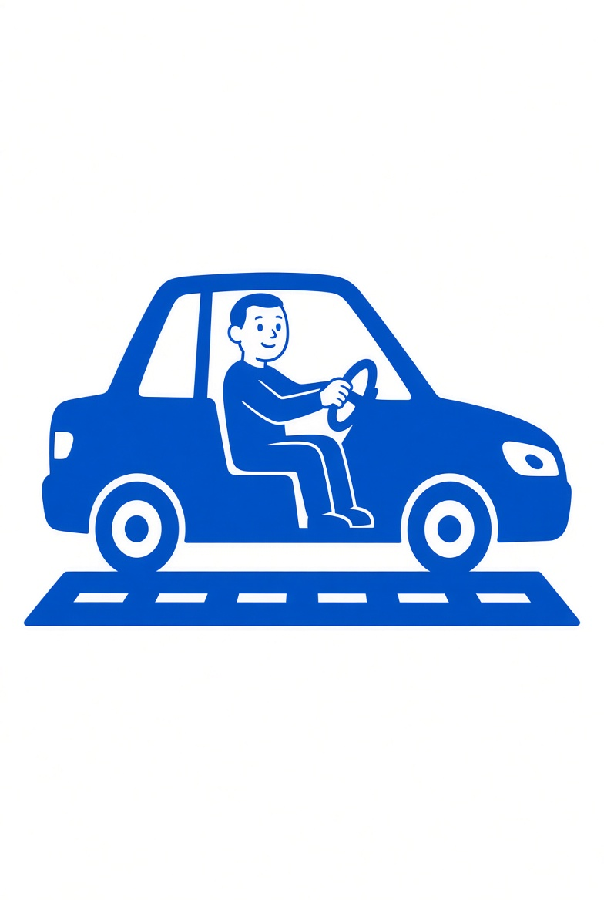
rijden
to drive
onregelmatigrang 461Transport & travelgetekend
reedheeft/is gereden
- Scene
- one adult sits behind the steering wheel of a plain car seen from the side, both hands on the wheel and eyes on the road ahead; the headlights are lit and the wheels sit on a stretch of road with a single white dashed line. Through the window only the driver is visible.
- Must read
- a person at a steering wheel with the car on a road.
- Avoid
- a bare bicycle with a rider leaning forward (fietsen); a person standing beside an open bonnet (repareren); a hand on a bus door handle (instappen); a person walking along the road (lopen); an aeroplane above clouds (vliegen).
- Alt text
- Een volwassene zit achter het stuur van een auto op een weg met een witte streep, de handen aan het wiel.
- Example
- Mijn vader rijdt een rode auto.
My father drives a red car.
rijden.png · rang 461 · A0 onregelmatig · lexicon woorden.tsv
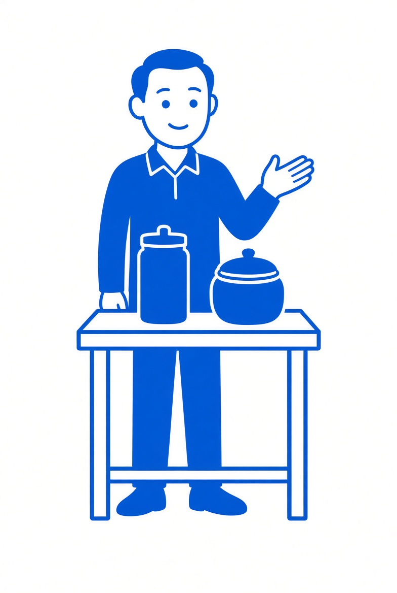
kiezen
to choose
onregelmatigrang 517Thought & knowledgegetekend
koosheeft gekozen
- Scene
- one adult stands at a plain table with two jars side by side, one tall and one round; the right hand is lifted and held still open above the round jar, both eyes on it. The hand has not touched a jar.
- Must read
- one hand hovering above one of two jars while the other jar stays untouched.
- Avoid
- two jars already in the hands and both carried (dragen); one jar lifted off the table and held up (nemen); coins counted into a palm (betalen); a person pointing with a straight finger at a menu (wijzen).
- Alt text
- Een volwassene staat bij een tafel met twee potten en houdt de hand boven een van de twee, zonder die aan te raken.
- Example
- Ik moet een toetje kiezen.
I have to choose a dessert.
kiezen.png · rang 517 · A0 onregelmatig · lexicon woorden.tsv
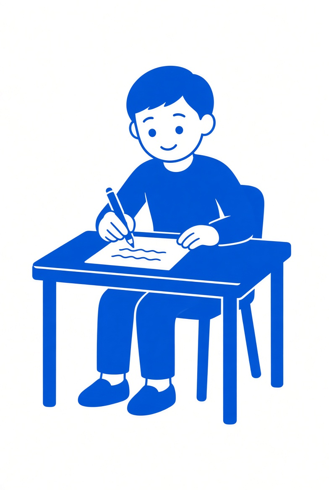
schrijven
to write
onregelmatigrang 518Communication & languagegetekend
schreefheeft geschreven
- Scene
- one adult sits at a table with a single sheet of paper flat in front of them, a pen gripped in one hand with the nib pressed to the paper, a short line of plain marks just made, and the eyes on the tip. The other hand holds the paper steady.
- Must read
- a pen point pressed to paper on which marks have just appeared.
- Avoid
- eyes on grey print lines inside an open book (lezen); a keyboard under both hands (werken); a brush with a picture on the page (tekenen); a pen held up and capped.
- Contrast
- Pair with lezen. Same adult at the same table: the pen presses marks onto paper here, the eyes are down on an open book there.
- Alt text
- Een volwassene zit aan een tafel en duwt een pen op een vel papier waarop al een paar korte strepen staan.
- Example
- Ik schrijf een brief aan mijn tante.
I write a letter to my aunt.
schrijven.png · rang 518 · A0 onregelmatig · lexicon woorden.tsv
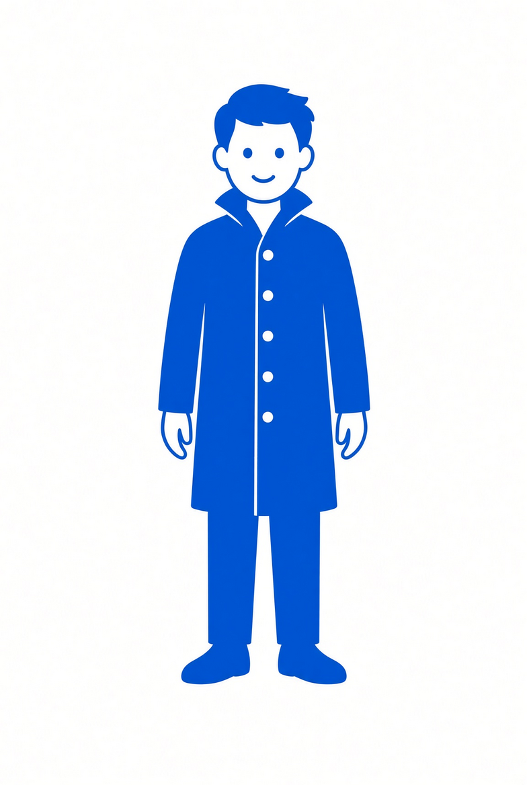
dragen (kleding)
to wear
onregelmatigrang 586Clothing & appearancegetekend
droegheeft gedragen
- Scene
- One adult stands facing the viewer in a plain room, drawn head to feet. Both arms hang free at the sides with the hands open and empty. The body is inside a long buttoned coat, closed across the chest, the sleeves reaching the wrists, the collar up at the neck. Nothing else in the picture.
- Must read
- a buttoned coat worn on the body, both hands empty at the sides.
- Avoid
- both arms hugging a tall box against the chest (dragen); a jumper pulled down over a raised head (aantrekken); a folded coat carried over one forearm (houden); a coat on a hook beside a person in underclothes (uittrekken).
- Alt text
- Een volwassene staat rechtop met lege, open handen naast het lichaam en een dichte jas met knopen aan.
- Example
- Zij draagt vandaag een rode jas.
She is wearing a red coat today.
dragen-kleding.png · rang 586 · A0 onregelmatig · lexicon woorden.tsv

drinken
to drink
onregelmatigrang 678Food & drinkgetekend
dronkheeft gedronken
- Scene
- one adult stands with the head tipped back and a plain glass held to the lips with one hand, the glass tilted and half empty, a few drops at the rim, the eyes shut. The other hand hangs at the side. A full jug of water stands on a table to the side.
- Must read
- a tilted glass at the lips with the head tipped back.
- Avoid
- a plate, a fork and a full mouth (eten); a raised bottle held away from the mouth (proosten); a closed cup on a table with both hands beside it (wachten); a tap running into a sink (wassen).
- Contrast
- Pair with eten. Same adult at the same table: a tilted glass is at the lips here, a bite of bread is in the mouth there.
- Alt text
- Een volwassene staat met het hoofd achterover en een schuin gehouden halfleeg glas aan de lippen; naast hem staat een kan water.
- Example
- Ik drink elke ochtend thee.
I drink tea every morning.
drinken.png · rang 678 · A0 onregelmatig · lexicon woorden.tsv
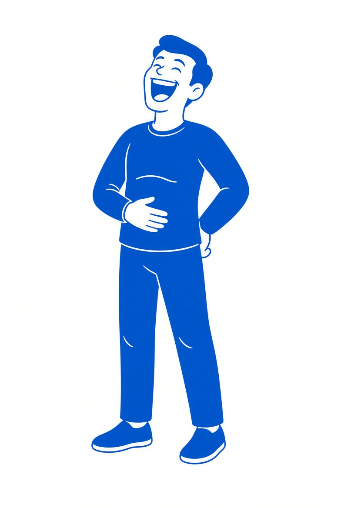
lachen
to laugh
onregelmatigrang 946Emotion & feelinggetekend
lachteheeft gelachen
- Scene
- one adult stands facing slightly away with the head thrown back, the mouth wide open, both eyes squeezed shut in curved lines, one hand flat on the belly and the shoulders lifted; the chest is clearly shaking. The mouth is open for laughing, with no sound shown.
- Must read
- a head thrown back with a wide open mouth and eyes squeezed shut.
- Avoid
- a person alone with a hand raised and a speech bubble, the mouth open in words (spreken); a person with the head tipped back beside an open notebook (zingen); a hand over the mouth with wide eyes (schrikken); a single tear on a straight face (huilen); a smiling face with the mouth closed.
- Contrast
- Pair with huilen. Same face at the same size: the head tips back with the mouth wide and the eyes shut here, it turns down with tears on the cheeks there.
- Alt text
- Een volwassene gooit het hoofd achterover met een wijd open mond, de ogen tot streepjes dicht en een hand op de buik.
- Example
- Wij lachen om de grap.
We laugh at the joke.
lachen.png · rang 946 · A0 onregelmatig · lexicon woorden.tsv
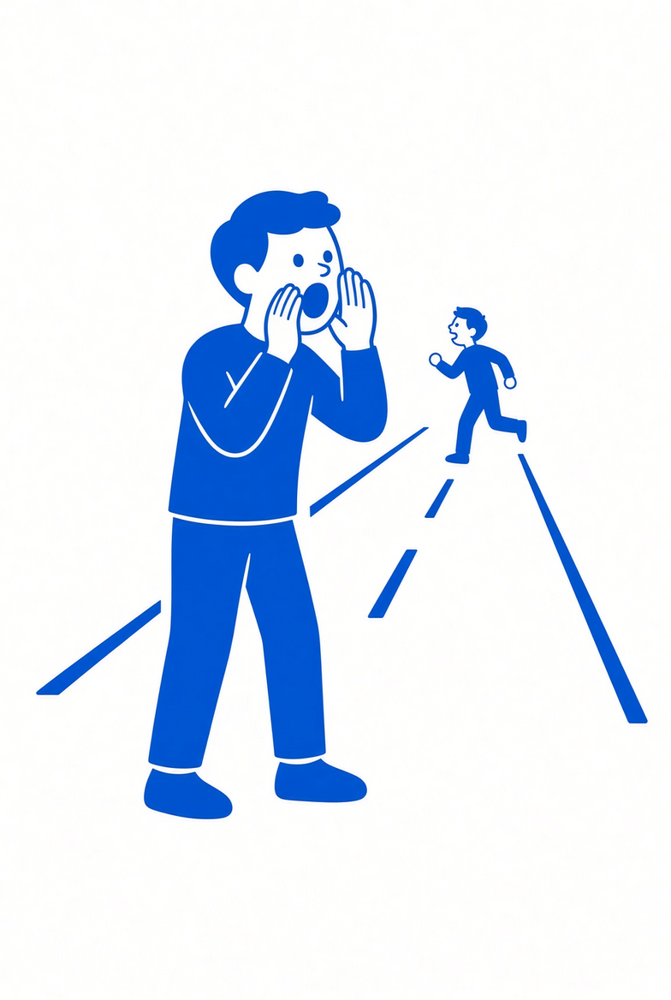
roepen
to call (out)
onregelmatigrang 1266Communication & languagegetekend
riepheeft geroepen
- Scene
- one adult stands in the middle of an empty street with both hands cupped round the mouth, mouth wide open and eyes on a distant figure at the far end of the street, who is already turning round; between them the street is bare, no letter or word in the air.
- Must read
- two cupped hands round an open mouth calling to a far figure.
- Avoid
- two people close together with speech bubbles (praten); a telephone held to one ear (bellen); one hand flat beside the mouth with a whisper (fluisteren); a raised arm shaking a fist (vechten); a horn or a bell (luiden).
- Alt text
- Een volwassene heeft beide handen aan de open mond, gericht naar iemand die ver weg op straat omkijkt.
- Example
- Mijn moeder roept ons voor het eten.
My mother calls us for dinner.
roepen.png · rang 1266 · A0 onregelmatig · lexicon woorden.tsv
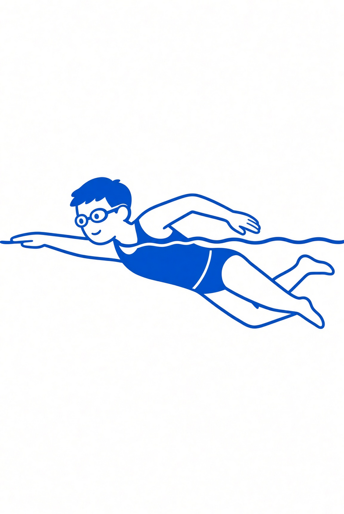
zwemmen
to swim
onregelmatigrang 1332Sport & gamesgetekend
zwomheeft/is gezwommen
- Scene
- one adult is seen from the side swimming in a pool: a bold pool edge and a wavy water-surface line are drawn, the body lies nearly horizontal just under the surface line with the head and one arm stretched forward out of the water, the other arm sweeping back, both legs kicking behind under the surface, goggles on and eyes ahead. Not a dive and not a leap.
- Must read
- an arm stretched forward over the water with the head up.
- Avoid
- a body already entering the water head first with both arms ahead (duiken); feet at the shallow end and a hand on the ladder (stappen); a board under both hands (drijven); a towel and a deckchair on the tiles (liggen); a boat or a sail (varen).
- Contrast
- Pair with duiken. Same pool and the same swimmer: the head is already up with one arm forward here, the body arcs into the water from above there.
- Alt text
- Iemand in het bad steekt een arm vooruit boven het water, terwijl de benen achter hem trappelen.
- Example
- In de zomer zwemmen wij in het meer.
In summer we swim in the lake.
zwemmen.png · rang 1332 · A0 onregelmatig · lexicon woorden.tsv

wassen
to wash
onregelmatigrang 2468Body & healthgetekend
wasteheeft gewassen
- Scene
- one adult stands at a low washbasin on a pedestal, full figure from head to feet with the legs and feet visible below the basin, and rubs both palms together centred directly under the tap: the spout is directly above the rubbing hands and the whole stream falls from the spout straight onto the hands (one stream only, not beside them); soapsuds up the wrists and a few drops on the basin rim; the eyes are down on the hands and a small towel hangs on a rail beside the basin.
- Must read
- both hands rubbed together under a running tap.
- Avoid
- a shower head over a head (douchen); a hand scrubbing a plate under a tap (afwassen); a body standing in a bath tub (baden); a washing machine with its door open (de was doen); a hand on a tap handle (draaien).
- Alt text
- Iemand wrijft de handen met zeep onder een lopende kraan, met de ogen op de handen en een handdoek ernaast.
- Example
- Ik was mijn handen voor het eten.
I wash my hands before dinner.
wassen.png · rang 2468 · A0 onregelmatig · lexicon woorden.tsv